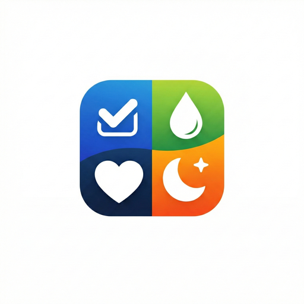
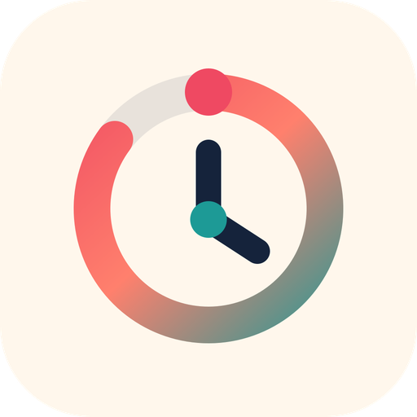
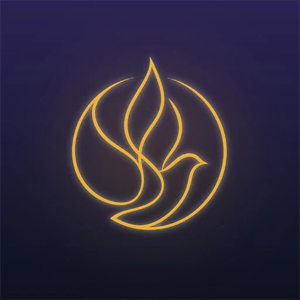
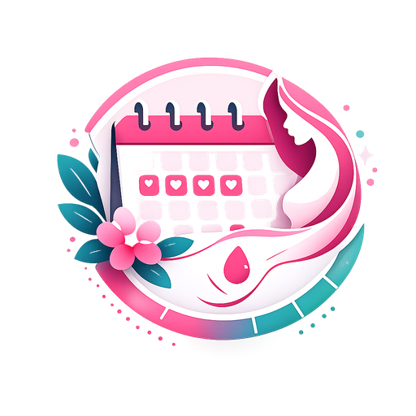

852Hz
Müzik ve Ses
Dünyanın sesini kıs.
Bir sese dokun ve dinle ya da dört katmana kadar kendi karışımını yap: 852 Hz üstüne yağmur, binaural ritimle okyanus. Süre dolunca ses yavaşça kısılır. Reklam yok, hesap yok.

Neler yapabilirsin?
Frekanslar ve tonlar
852 Hz ve diğer tek frekanslı tonlar. Uyku, odak ve meditasyon için binaural ritimler (kulaklıkla).
Ortam sesleri
Yağmur, orman, okyanus ve daha fazlası. Her biri tek başına ya da karışımın bir katmanı olarak.
Dört kanallı mikser
Dört sese kadar katman oluştur, seviyelerini ayarla, favori karışımlarını kaydet.
Uyku zamanlayıcısı
Süre dolunca ses kendiliğinden yavaşça kısılır. Kilit ekranından kontrol edebilirsin.
Gerçekten çevrimdışı
Uçakta, uçak modunda, her yerde çalışır. Reklam yok, hesap yok, kayıt yok, analiz SDK'sı yok.
852Hz bir rahatlama aracıdır; hiçbir tıbbi durumu teşhis etmez veya tedavi etmez.
Tüm ekranlar
Büyütmek için dokun.


Mağaza bilgileri
- Kategori
- Müzik ve Ses
- İndirme
- 5+
- Puan
- Henüz yeterli puan yok
- Sürüm
- 1.0.0
- Güncelleme
- 1 Kasım 2026
- İçerik derecelendirmesi
- PEGI 3
Diğer uygulamalarımız

Hayatını Planla
DEHB dostu günlük planlayıcı. Yanında sanal pet Buddy var.

FastTrack
Aralıklı oruç zamanlayıcısı; su, kilo ve ilerleme takibi.

Selaora
Günlük İncil ayetleri, rehberli dualar, okuma planları ve iman günlüğü.

Döngü Takip
Adet döngünü kolayca takip et, bedenini daha iyi tanı.